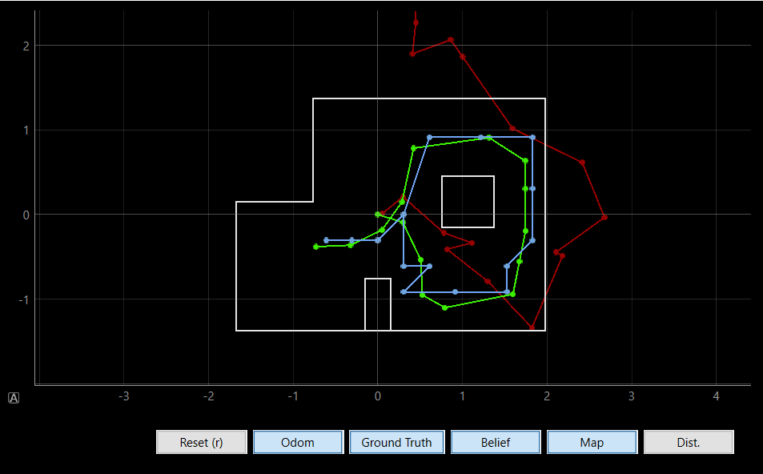
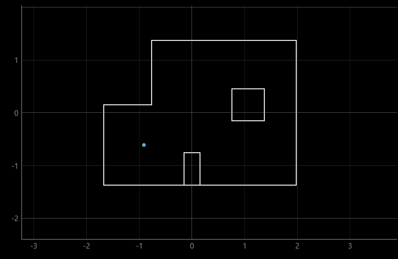
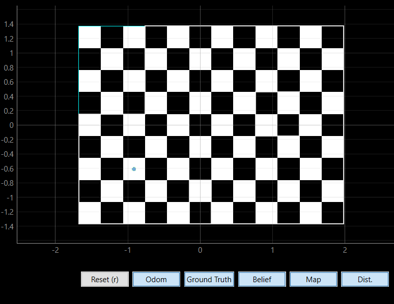
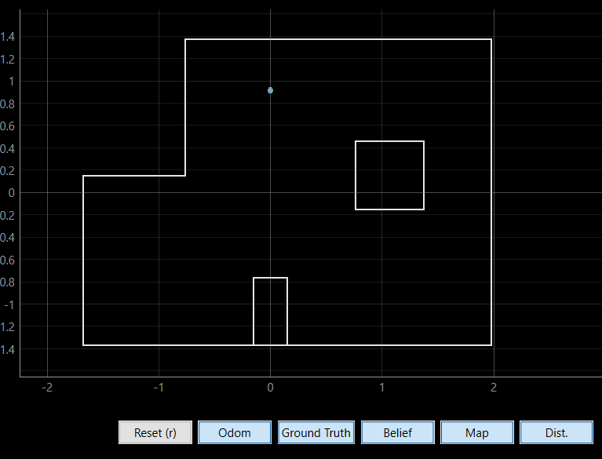
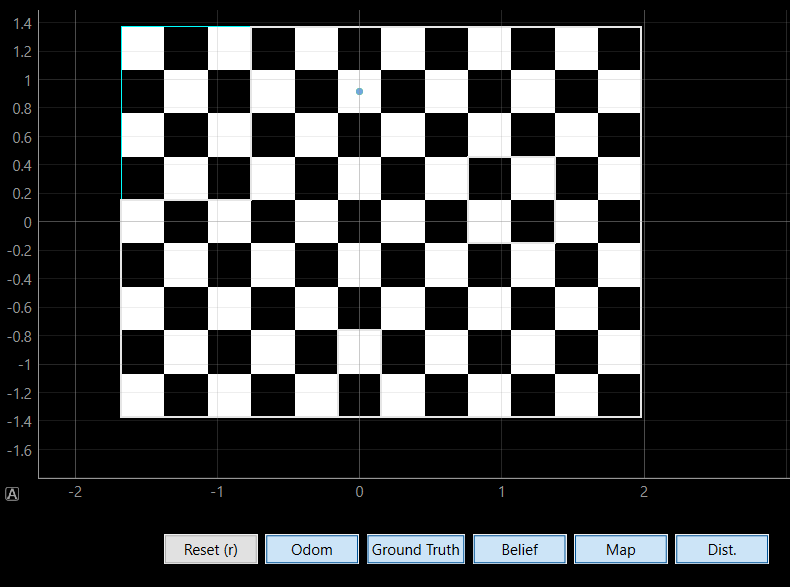
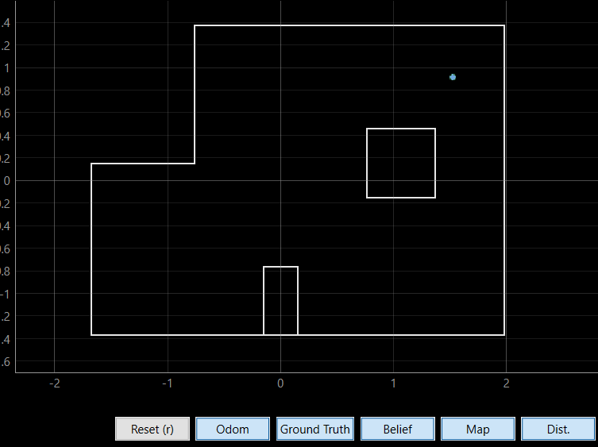
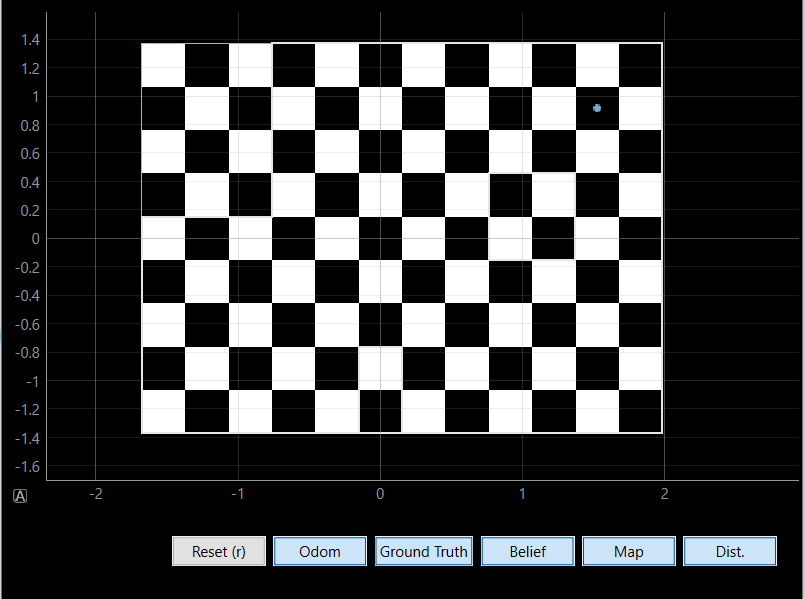
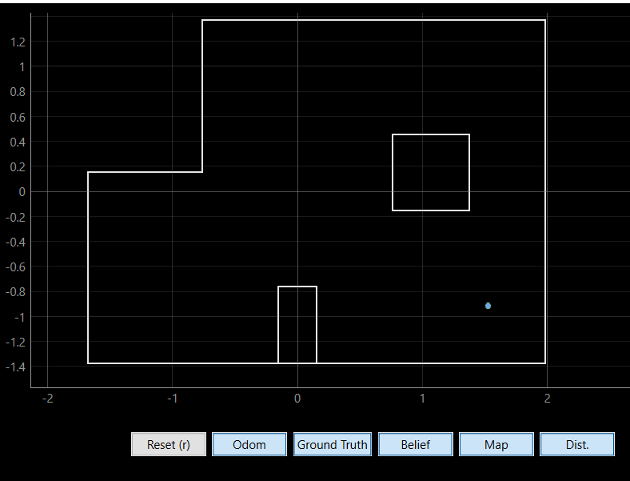
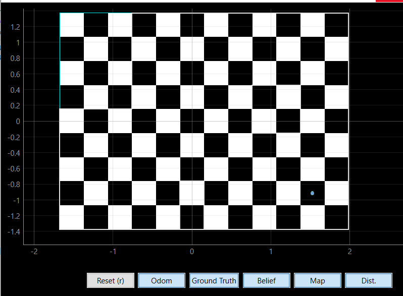

In this lab, we applied the Bayes filter for grid-based localization. Our objective was to simulate a robot navigating a predetermined and preprogrammed path. At each time step, we employed the Bayes filter to ascertain the robot's location (localization).
The notebook lab11_sim.ipynb is initially executed to evaluate the localization features in a simulated environment. The following graph displays odom, ground truth, and belief as the resulting output:
The ground truth is depicted by the green line, the belief is indicated by the blue line, and the odom is represented by the red line. As demonstrated in the illustration, the Bayes filter performed effectively.
Upon testing the provided code, the subsequent step involved completing the perform_observation_loop function in lab11_real.ipynb. I integrated an additional notification handler to obtain distance and angle data from Artemis, and subsequently issued a command for the robot to rotate 360 degrees while gathering 18 data points using the Tof sensor. To enable this functionality, a time delay was required, allowing the robot sufficient time to complete the rotation. Initially, I attempted to add the "await" and "async" keywords to the necessary function definitions as per the instructions, but encountered a challenging issue. Instead, I opted for an alternative approach, directly invoking the asyncio sleep coroutine as asyncio.run(asyncio.sleep(25)) within the perform_observation_loop() function. This solution proved effective after multiple trials.
Below is the code snippet for the robot to rotate 360 degrees and collect 18 data points:
In the end, after thorough testing, I executed the observation loop at four distinct points on the map. The first point was located at (-3, -2). The results are provided below. I included the ground truth for comparison with the belief and incorporated a grid to enhance visualization. The localization of points aligned perfectly with the ground truth(blue(belief) and green point (ground truth) overlapped ).
The result of (-3,-2)
 The result of (0,3)
 The result of (5,3)
 The result of (5,-3)
 